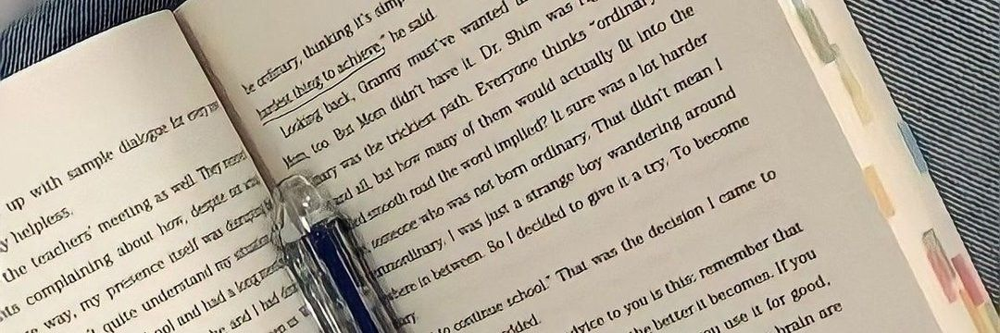

Una guía completa sobre los diseños cuantitativos y cualitativos, sus tipos, diferencias, instrumentos de recolección y ejemplos reales de aplicación en la investigación académica.
"El diseño de investigación es el plan o estrategia que se desarrolla para obtener la información que se requiere en una investigación y responder al planteamiento del problema."
— Hernández-Sampieri, R. y Mendoza Torres, C. P. (2018, p. 148)El diseño de investigación es, en palabras simples, el mapa que guía todo el proceso investigativo. Nos indica desde dónde partimos, qué camino vamos a tomar y cómo vamos a llegar a las respuestas que buscamos.
Elegir el diseño correcto no es una decisión menor: determina qué tipo de datos recolectamos, cómo los analizamos y qué tan confiables serán nuestras conclusiones. Según Hernández-Sampieri (2018), esta elección depende fundamentalmente de la naturaleza del problema de investigación, los objetivos planteados y la pregunta de investigación.
Ñaupas et al. (2018) señalan que el diseño responde a tres preguntas fundamentales: ¿cuándo? se recolectan los datos, cómo? se recolectan, y de quiénes? o de qué? se toma la información.
Existen dos grandes rutas metodológicas: la cuantitativa, orientada a medir variables y establecer relaciones numéricas, y la cualitativa, orientada a comprender fenómenos desde la perspectiva de quienes los viven.
Referentes bibliográficos de esta unidad
📘 Hernández-Sampieri & Mendoza (2018). Cap. 7 (cuantitativo, pp. 148-193) y Cap. 14 (cualitativo, pp. 522-568).
📗 Ñaupas Paitán et al. (2018). Cap. IX: El diseño de investigación (pp. 347-372). 5ª ed.
En la ruta cuantitativa, el diseño define exactamente cómo se va a recolectar la información para contrastar hipótesis y medir variables con precisión numérica (Hernández-Sampieri, 2018, Cap. 7).
Se caracterizan por la manipulación deliberada de una o más variables independientes (causas) para medir su efecto sobre variables dependientes (efectos), con control de variables extrañas.
No hay manipulación de variables. Se observan los fenómenos tal como ocurren en la realidad. Son los más frecuentes en ciencias sociales, administrativas y contables (Hernández-Sampieri, 2018).
Tiene como objetivo indagar la incidencia de los valores de una o más variables en una población. No busca relaciones entre variables, solo describe. Se recogen datos en un único momento.
Ejemplo: describir cuántas empresas de Medellín reportan costos ambientales en sus estados financieros en 2024.
Busca conocer la relación o grado de asociación entre dos o más variables en un contexto específico. Cuantifica las relaciones usando coeficientes estadísticos (Pearson, Spearman, etc.).
Ejemplo: determinar si existe relación entre el nivel de implementación de contabilidad ambiental y la reducción de residuos en empresas antioqueñas.
Analiza cambios a lo largo del tiempo en una población general. Los datos se recogen en distintos puntos temporales de la misma población (aunque no sean los mismos individuos).
Ejemplo: analizar la evolución del aprovechamiento de residuos en Medellín entre 2019 y 2024.
Se recolectan datos de los mismos individuos u organizaciones en diferentes momentos del tiempo. Permite ver cambios individuales con mayor precisión que el diseño de tendencia.
Ejemplo: hacer seguimiento a las mismas 50 empresas de Medellín durante 5 años para ver cómo evoluciona su gestión ambiental.
La investigación cualitativa busca comprender los fenómenos desde la perspectiva de quienes los viven. No mide, interpreta. Sus diseños son flexibles y emergentes (Hernández-Sampieri, 2018, Cap. 14).
El propósito es generar una teoría que explique un proceso o acción desde los datos mismos, no desde marcos teóricos previos. Se usa cuando se quiere entender cómo surge y funciona un fenómeno social. Las categorías emergen inductivamente de los datos.
Describe y analiza culturas, comunidades y grupos desde adentro. El investigador se sumerge en el contexto. Muy usado en organizaciones para entender su cultura interna, prácticas cotidianas y significados compartidos entre sus miembros.
Explora las experiencias vividas de personas respecto a un fenómeno. Se centra en los significados que las personas le dan a sus experiencias. Busca la "esencia" del fenómeno desde la perspectiva de quienes lo viven directamente.
Recopila y analiza historias de vida, relatos y narrativas de individuos. El investigador busca entender los significados que las personas construyen a través del tiempo mediante sus propias historias y experiencias personales relatadas.
Examina en profundidad un caso específico (una persona, empresa, institución, evento). Busca comprensión holística. Muy usado en investigación contable y administrativa para estudiar organizaciones en detalle y en contexto real.
Busca resolver un problema real de la práctica y al mismo tiempo generar conocimiento. El investigador participa activamente en la transformación del problema. Es colaborativa: se hace con las personas, no sobre ellas.
"En la ruta cualitativa, el diseño se refiere al abordaje general que habremos de utilizar en el proceso de investigación. Los diseños cualitativos son más flexibles y abiertos, y su desarrollo va ajustándose a las circunstancias del estudio."
— Hernández-Sampieri, R. y Mendoza Torres, C. P. (2018, p. 525)Comparar ambos enfoques permite al investigador elegir el más adecuado para su pregunta. Ninguno es mejor que el otro: son complementarios y responden a propósitos distintos.
| Criterio | 🔢 Cuantitativo | 🔍 Cualitativo |
|---|---|---|
| Propósito principal | Medir, comparar y establecer relaciones numéricas entre variables | Comprender, interpretar y explorar significados y procesos |
| Tipo de datos | Numéricos, estadísticos, medibles y verificables | Textuales, visuales, narrativos, observacionales |
| Marco teórico | Se construye antes de recolectar datos (deductivo) | Puede emerger durante o después del proceso (inductivo) |
| Hipótesis | Se formulan antes y se prueban con datos | Emergentes; son suposiciones que evolucionan con el estudio |
| Muestra | Grande, representativa; selección aleatoria preferida | Pequeña, intencional; selección por criterio o conveniencia |
| Análisis | Estadístico (descriptivo, inferencial, multivariado) | Interpretativo (categorías, temas, codificación) |
| Instrumentos | Encuestas, tests estandarizados, observación estructurada | Entrevistas abiertas, observación participante, grupos focales |
| Flexibilidad del diseño | Rígido; se define antes y no cambia durante el estudio | Flexible; puede ajustarse conforme avanza la investigación |
| Generalización | Alta; busca generalizar resultados a poblaciones amplias | Limitada; busca profundidad, no generalización estadística |
| Rol del investigador | Externo, objetivo, distante del fenómeno estudiado | Involucrado, reflexivo; es el principal "instrumento" |
Los instrumentos son los medios concretos que se usan para recoger la información. Su elección depende del diseño y del tipo de datos que se necesitan.
Instrumento con preguntas cerradas y escalas (Likert, semántica diferencial). Permite recolectar datos de muchos sujetos de forma rápida y estandarizada.
CuantitativoMide constructos psicológicos o actitudinales (conocimientos, actitudes, habilidades). Requiere validación estadística previa (confiabilidad y validez).
CuantitativoEl investigador registra conductas en una lista de cotejo o escala de observación previamente diseñada. Los datos son numéricos y sistemáticos.
CuantitativoRevisión de documentos (estados financieros, informes, registros) para extraer datos numéricos que puedan someterse a análisis estadístico.
CuantitativoConversación semiestructurada o abierta con el participante. Permite explorar experiencias, percepciones y significados con libertad y profundidad.
CualitativoDiscusión guiada con un grupo pequeño (5-10 personas) sobre un tema específico. Útil para explorar percepciones colectivas y dinámicas de grupo.
CualitativoEl investigador se integra al contexto estudiado y registra sus observaciones en un diario de campo. Captua la realidad desde adentro.
CualitativoRevisión e interpretación sistemática de textos, documentos, noticias o narrativas para identificar temas, patrones y significados subyacentes.
CualitativoSelección de artículos publicados en revistas académicas indexadas (2015-2025) en el campo de la contabilidad, administración y ciencias económicas, que ejemplifican los distintos diseños de investigación.
Este artículo identifica y describe los costos ambientales de una empresa minera en Antioquia mediante revisión de registros contables y financieros. Aplica un diseño no experimental descriptivo-correlacional al analizar la relación entre los costos registrados como "gastos generales" y la clasificación real de costos ambientales según estándares internacionales. Demuestra que los costos ambientales permanecen ocultos, invisibilizando el pasivo ambiental real de la empresa.
Investiga mediante revisión y análisis documental cuantitativo el nivel de adopción de herramientas de contabilidad ambiental en empresas del sector financiero colombiano. Usa análisis de frecuencias y estadísticas descriptivas para evidenciar que, aunque las empresas reconocen los impactos ambientales de sus operaciones, la mayoría no incorpora sistemas contables para medirlos ni gestionarlos de forma sistemática.
Analiza mediante estadísticas descriptivas longitudinales la evolución en la generación y manejo de residuos sólidos en instituciones universitarias, comparando datos de varios periodos. Emplea encuestas estructuradas y análisis documental de registros institucionales. Concluye que la generación de residuos crece mientras las prácticas de aprovechamiento no avanzan al mismo ritmo, evidenciando una brecha operativa y de gestión ambiental sistemática.
Aplica un diseño cualitativo tipo estudio de caso para analizar la implementación de la contabilidad ambiental en empresas colombianas bajo el marco del desarrollo sostenible. Mediante entrevistas semiestructuradas y análisis documental cualitativo, identifica las percepciones de gerentes y contadores sobre la contabilidad ambiental, sus limitaciones culturales, normativas y técnicas, así como las perspectivas de adopción futura en el contexto colombiano.
Mediante un abordaje cualitativo de tipo fenomenológico, este artículo analiza las experiencias y percepciones de contadores y directivos sobre los costos ambientales en empresas colombianas. A través de revisión documental cualitativa y análisis interpretativo, propone un esquema de valoración y revelación de costos ambientales adaptado al contexto contable colombiano, argumentando desde la experiencia de los actores la necesidad de su implementación.
Emplea un diseño cualitativo de análisis documental con elementos de teoría fundamentada para construir una comprensión de cómo emerge y opera la contabilidad ambiental en el sector arrocero colombiano. A partir del análisis sistemático de fuentes secundarias, informes sectoriales y normativas vigentes, desarrolla categorías analíticas que explican por qué las prácticas contables ambientales no se consolidan a nivel empresarial en este sector, pese a la normativa existente.
Recursos en español para profundizar en los diseños de investigación cuantitativa y cualitativa. Se recomienda verlos en el orden propuesto.
Explicación clara y visual de los tipos de diseños cuantitativos: experimental puro, cuasi-experimental, pre-experimental, transversal y longitudinal. Canal académico en español con ejemplos prácticos.
Ver en YouTube →Video explicativo sobre los diseños no experimentales, los más usados en ciencias sociales y contables. Diferencia entre diseños transversales (descriptivo y correlacional) y longitudinales con ejemplos concretos.
Ver en YouTube →Explicación detallada de los cinco diseños cualitativos principales según Hernández-Sampieri (2018): teoría fundamentada, etnográfico, fenomenológico, narrativo e investigación-acción, con ejemplos reales de investigación.
Ver en YouTube →Video sobre el estudio de caso: cuándo usarlo, cómo diseñarlo y cómo analizarlo. Ampliamente utilizado en investigación contable y administrativa. Incluye ejemplos de aplicación en organizaciones colombianas y latinoamericanas.
Ver en YouTube →
Bibliografía obligatoria del módulo
Artículos académicos citados (bases de datos indexadas)